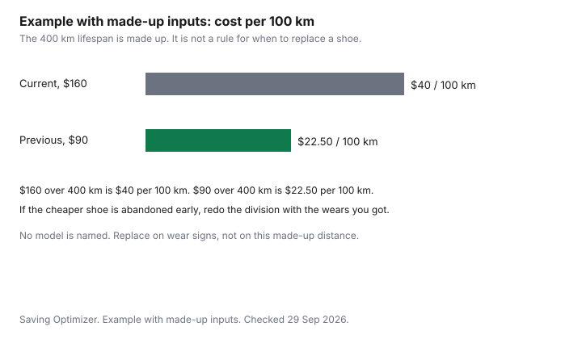

Clothing · Canada
Running and Walking Shoes in Canada: Replace Them at the Right Time and Pay Less
In Canada, replace running and walking shoes when you can see wear or new aches start, and save by buying a previous-season model in the same fit while the return window still exists. Running and walking shoes get replaced at the wrong moment in two directions. Some stay on a foot that has already started to hurt. Some are bought at full price the week a previous-season pair of the same fit is still on the rack. This page is a timing and price method. It does not name a model, and it does not give a distance rule, because no distance interval is cited here. Winter boots are a different shoe, on the winter-boot guide. Workout clothes around the shoe are the activewear guide.
Key takeaways
- This guide does not cite a kilometre interval for replacing running shoes. Use wear you can see, and new aches, as common guidance. That is not a medical rule.
- A previous-season model is worth it when the fit still matches your foot and the return window still exists if you are wrong. No model is named here.
- A fitting-room walk is cheaper than a shoe you cannot send back after an outdoor try. Worn-shoe rules: see the retailer.
- Price-adjustment windows for running shoes are not cited. See the retailer, and use the price-adjustment guide for the idea.
- RC4065 lists orthopaedic shoes, boots, and inserts as prescription needed. It does not name ordinary running shoes. Not tax advice.
Mileage and wear signs
Any distance interval needs a cited source, or it is dropped. This page drops it.
There is no kilometres-per-pair figure below, and the chart's lifespan is labelled as made up so it cannot be read as advice. What you can use is a short list of signs that runners and walkers commonly watch. The midsole creases deeply or feels flat under the heel. The outsole rubber is smooth in the spots you land. The wear is heavier on the inside or the outside of one shoe. You have a new ache in the foot, shin, or knee that arrived with this pair and was not there in a newer pair of the same route. That list is common guidance. It is not a medical rule. Pain is a reason to speak to a clinician, not a reason to shop.
Walking shoes and running shoes are not interchangeable just because both are athletic. A walking shoe used for running can look fine and still be the wrong tool. The reverse is a heavy shoe for a short walk. Match the shoe to the surface you use: sidewalk, track, treadmill, or trail. The gym-versus-home guide is the workout decision. This page does not pick a shoe for it.
Safety footwear has its own replacement lines, including replacing a boot after an impact even when the damage is hidden. That is the CCOHS sheet, and it belongs on the safety-boot guide. Do not borrow it as a rule for a running shoe, and do not buy a green-triangle boot for a jog unless the job requires that boot.
| Signal | What people look for | What it does not prove |
|---|---|---|
| Midsole | Deep creases, or a heel that feels flat compared with a newer pair | A diagnosis, or a set number of kilometres |
| Outsole | Smooth rubber where you strike or push off | That the shoe is unsafe for every walker. It is a wear sign |
| Uneven wear | One edge much more worn than the other | That you must buy a motion-control model. It is a reason to look, and to ask a clinician if it hurts |
| New aches | Foot, shin, or knee pain that showed up with this pair | A shopping list. Pain is a clinical question first |
Previous-model discounts
The previous-season version of a shoe you already like is the straightforward way to pay less. The conditions are boring and they matter.
The fit has to be the same last, or close enough that your foot agrees in the store. A redesigned upper with a new name is a new shoe, even if the brand kept a word you recognize. The return window has to be long enough that a mistake is not final sale. And the comparison price is the current model you would actually buy, not a manufacturer's suggested price you have never seen charged.
This guide does not cite a typical percent off last season's shoes, at Sport Chek or anywhere else. Sport Chek is a place households look, and Triangle earn on a qualifying shoe is the Mark's and Sport Chek guide. Points come after the fit. A discounted gift card, a cash-back portal, and an Amazon.ca storefront are offer types. None of them is a model pick. No storefront partnership is claimed. If the pair is coming from a US site, whether a surtax applies depends on origin and classification. Check with CBSA (1-800-461-9999) or your carrier, and read the US clothing orders guide before you treat the US sticker as the cost.
Example with made-up inputs, for the chart only. A made-up current model costs $160 and is assumed to last a made-up 400 kilometres, which is $40 per 100 kilometres. A made-up previous-season model costs $90 over the same made-up 400 kilometres, which is $22.50 per 100 kilometres. The 400 kilometres are not a replacement rule. They exist so the two bars can be compared. If the cheaper shoe lasts half as long because the fit makes you stop wearing it, the current model can win. Write your own price and your own honest lifespan.
Fit appointments vs online
A store appointment is useful when you can walk, in the socks you run in, on both feet, at a time of day when your feet are closer to their working size. Leave the pair on long enough to feel the heel and the toe box.
A two-step glance at a mirror is not a fit. Bring any orthotic you already use, and ask whether the shoe still has the room the clinician described. This page does not set a fee for that visit, because it does not cite one.
Online is reasonable when you know the exact model and size from a pair that worked, and the return policy covers a try-on at home. Read whether shoes that have been worn outside can come back. This guide does not cite that rule for Sport Chek or for any other retailer. See the retailer before you scuff a sole on pavement "just to test grip." A treadmill in a store is still indoors. A lap of the parking lot may be a different category on the return page. If the page is silent, ask, and keep the answer with the receipt.
Price adjustments and return policies
A price adjustment is a later drop in the same retailer's price. A price match is someone else's lower price, usually at the moment you buy.
The price-adjustment guide separates those tools for household retailers that publish a window. This page does not cite a running-shoe window at Sport Chek or at a specialty shop. See the retailer. If you buy a previous-season model, ask whether that model is excluded from adjustments because it is already a markdown or final sale. Final sale plus a bad fit is a shoe you own.
| Path | When it helps | Policy cell |
|---|---|---|
| Previous-season model | Same fit you already know, priced under the current pair you would buy | Return of a worn trial: see retailer |
| Loyalty | Points on a shoe you were buying. Triangle at Sport Chek is 0.4 percent base on qualifying pre-tax items | Gift cards excluded at Sport Chek. See the Triangle guide |
| Price adjustment | The same retailer cuts the same shoe after you paid | See retailer. Not cited here |
| Portal or gift card | An offer type on an order you had already decided | Does not change the fit or a final-sale line |
Orthotic and benefit-plan considerations (link Healthcare)
Guide RC4065, Medical Expenses 2025, as of 29 Sep 2026, lists "Orthopaedic shoes, boots, and inserts" and marks that line prescription needed. That is the sentence this page will quote.
Ordinary running shoes and ordinary walking shoes are not on that line. A store printout that says "supportive" does not turn a trainer into an orthopaedic device. If a medical practitioner has prescribed an orthopaedic shoe, boot, or insert, follow RC4065 and the receipt rules your preparer uses. The household map of the credit is the medical-expense guide. Not tax advice. Confirm with the CRA or a tax professional.
A benefit plan is not the tax credit. Some plans pay a portion of orthotics or of prescribed footwear and pay nothing on a running shoe. This guide does not cite a plan booklet, a percent, or a yearly maximum. Ask the plan, with the procedure code the provider gives you, before you buy. A gait analysis sold in a shoe store is not, by itself, the prescription RC4065 names.

Sources
- Canada Revenue Agency, Guide RC4065, Medical Expenses 2025, as of 29 Sep 2026. The list includes orthopaedic shoes, boots, and inserts, prescription needed. Ordinary running shoes are not named on that line.
- Triangle Rewards loyalty and partners pages, as of 29 Sep 2026, for the 0.4 percent base and the Sport Chek gift-card exclusion. Cited only as loyalty context. No Sport Chek shoe-return window or price-adjustment window is cited. See the retailer.
- No kilometre replacement interval, no gait-analysis fee, and no previous-season markdown percent is cited. The chart is an example with made-up inputs.
Frequently asked questions
How often should I replace running shoes?
This guide does not cite a distance or a number of months. Common signs are a creased or collapsed midsole, worn or smooth outsole rubber, wear that is heavier on one side, and aches that showed up with the shoes rather than with a change in your route. Those signs are common guidance, not a diagnosis. If you are in pain, talk to a clinician. Do not wait for a round number of kilometres this page does not have.
Are last season's models worth buying?
They are worth buying when the fit is the one you already know and the price is below the current model you would otherwise pay. A new colourway of a changed last is not automatically the same shoe. Keep the receipt and read whether a worn trial can be returned. This page does not name a model and does not cite a typical markdown. The chart's prices are an example with made-up inputs.
Do I need a gait analysis?
Not as a default. A store treadmill session can help you feel a difference between two pairs. It is not a medical assessment, and this page does not cite a price for one. If you have an injury, a recurring ache, or a clinician has already told you what to look for, follow that advice and use the store to try the shoes they described. A gait printout is not a reason to buy a shoe you have not walked in.
Can I claim orthotics or shoes as a medical expense?
Guide RC4065, Medical Expenses 2025, lists orthopaedic shoes, boots, and inserts, and it says prescription needed. Ordinary running shoes are not named on that line. Do not claim a pair of trainers because you run. Benefit plans differ from the tax credit. Read the booklet or ask the plan. Not tax advice. Confirm with the CRA or a tax professional. The credit's place in a household return is the medical-expense guide.
How do I make shoes last longer?
Use them for the surface they were bought for, let a sweaty pair dry before the next run, and rotate a second pair if you run most days so one pair is not damp every morning. Replace them when the wear signs show, not on a rumour. This page does not cite a resoling price for running shoes. Safety-boot repair is a different sheet, on the safety-boot guide.
Researched and drafted with AI assistance and fact-checked against official Canadian sources. How we create content.
Disclosure: Discounted retailer gift cards, cash-back portal offers, and Amazon.ca storefront types are offer types. Saving Optimizer may earn a commission if a partner link is added later. No partnership is claimed. None of those offers is a shoe recommendation. Education only. Not medical or tax advice.